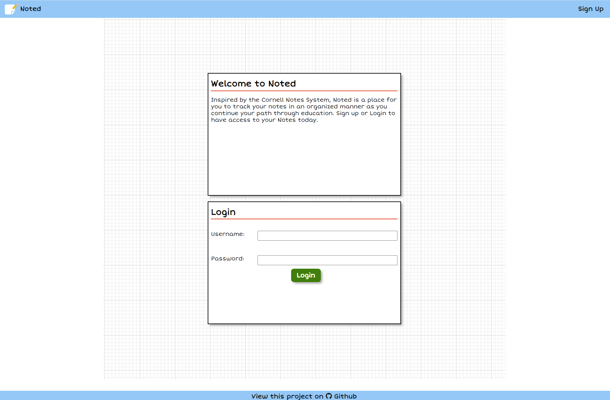

I'm a former educator turned software engineer who has a passion for continuous learning through my personal love of technology, education, and art. You can always find me making something, whether it is a game, app, painting, or even cosplay. I basically make a little bit of everything.
Hobby Huddle
Hubby Huddle is an App that develops community bonds through a mutual love of hobbies by allowing Mentors to create workshops in which students can sign up, Students to create requests for specific lessons, and Vendors to offer their venues for hosting. Using React, my team and I created Hobby Huddles’ unique views and site interactions based on the role of the user.
Shinshi
Shinshi is a website that hosts detailed information about different anime to its community. Shinshi showcases a CRUD application where users can track and share their reviews of different anime which are populated onto the site by admin users with the use of Jikan API.

Noted
About noted
RetroSweeper
Retrosweeper is a browser based recreation of the Windows 98 Minesweeper game. RetroSweeper search and recursive methods to populate the board with mines, track mine locations, and expose the board appropriately when tiles are revealed.